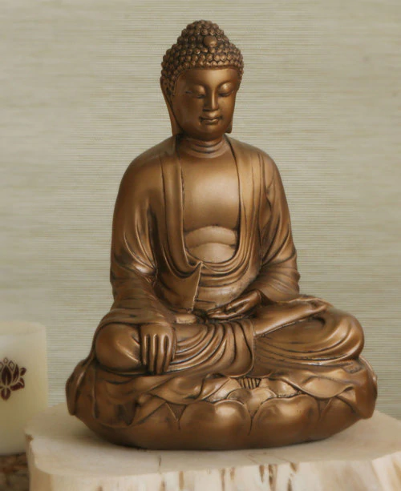

Home
Map
Places of Worship
About Us
Buddhism
Christianity
Hinduism
Islam
Judaism
Sikhism
Learn More
Citations

Buddhism
Buddhism is a religion and philosophy based off the teachings of the Buddha, a teacher who lived in northern India between the 6-4 centuries BCE whose real name was Siddhartha Gautama. It has played a central role in the spiritual, social, and cultural life of Asia, and more recently in the West during the 20-21 centuries.
Within Buddhism, there is a Triratna ("Three Jewels", or the Threefold Refuge), consisting of Buddha (the teacher), dharma (the teaching, or
doctrine),
and sangha (the monastic order, or community). There are also Four Noble Truths that are considered to be the essence of the teachings of the
Buddha. He developed these four principles during his legendary meditation under the bodhi tree.
Four Noble Truths:
- Dukkha (the truth of suffering)
- Samudāya (the truth of the origin of suffering)
- Nirodha (the truth of the cessation of suffering)
- Magga (the truth of the oath to the cessation of suffering)


One of the central beliefs in Buddhism is the belief that the universe is the product of karma, or the law of the cause
and effects of actions, and that there is a cycle of rebirth, called samsara (literally "wandering"), which is regarded
as a domain of suffering. A Buddhist's ultimate goal is to escape from that suffering, but the means of escape will
only be revealed after many lifetimes, when they perfect themselves to the point where they discover the path out of samsara.
Sects
There are three major branches of Buddhism: Theravada ("Way of the Elders"), Mahayana (Sanskrit: "Greater Vehicle"),
and Vajrayana (Sanskrit: "Diamond Vehicle").
The Theravada branch teaches about karma, as well as the usage of meditation to achieve their goal of liberation from disturbances.
These teachings mainly proliferated in Southeast Asia (Sri Lanka, Thailand, Cambodia, and Burma).
The Mahayana branch teaches the Bodhisattva Attitude, or a mindset in which a person's primary motivation in life is to be useful
to others, and aims to gradually increase both compassion and wisdom. These teachings mainly spread through Northern Asia (Japan, Vietnam, China,
Tibet, and Korea). The Mahayana includes Theravada teachings.
In Vajrayana , the Buddha is not considered to be a person but rather a mirror to every person's mind. People who are part of this
branch believe that external perfection can only be achieved once they have innate internal perfection. When Buddhism was eradicated in its native
land, these teachings mainly survived only in Tibet. The Vajrayana includes both Theravada and Mahayana teachings.


Holidays:
There are many Buddhist holidays, but two important ones are Vesak and Magha Puja.
Vesak is on the day of the Buddha's birthday and is one of the major festivals of the year. It is celebrated on the
day of the first full moon in
May, or during the fourth lunar month that occurs during May or June. In some countries, Vesak is a day on which people also
celebrate the enlightenment of the Buddha.
Magha Puja is an important religious festival celebrated in Thailand, Cambodia, and Laos on the day of the full moon
during the third lunar month (usually in February or March). It celebrates a gathering that was held by the Buddha and 1,250 of his first
disciples.
FUN FACTS:
- There are around 488 million Buddhists worldwide.
- There is no single holy book in Buddhism. Extensive scriptures have beenpreserved in many Asian languages.
- Buddhists don't believe in a personal creator god.
- Due to its heavy emphasis on meditation and mindfulness, Buddhism can be considered tobe a form of psychology rather than, or in addition to, being a religion.
- Traditional Buddhists often believe in the concept of reincarnation, but modern Buddhists generally don't believe in it.